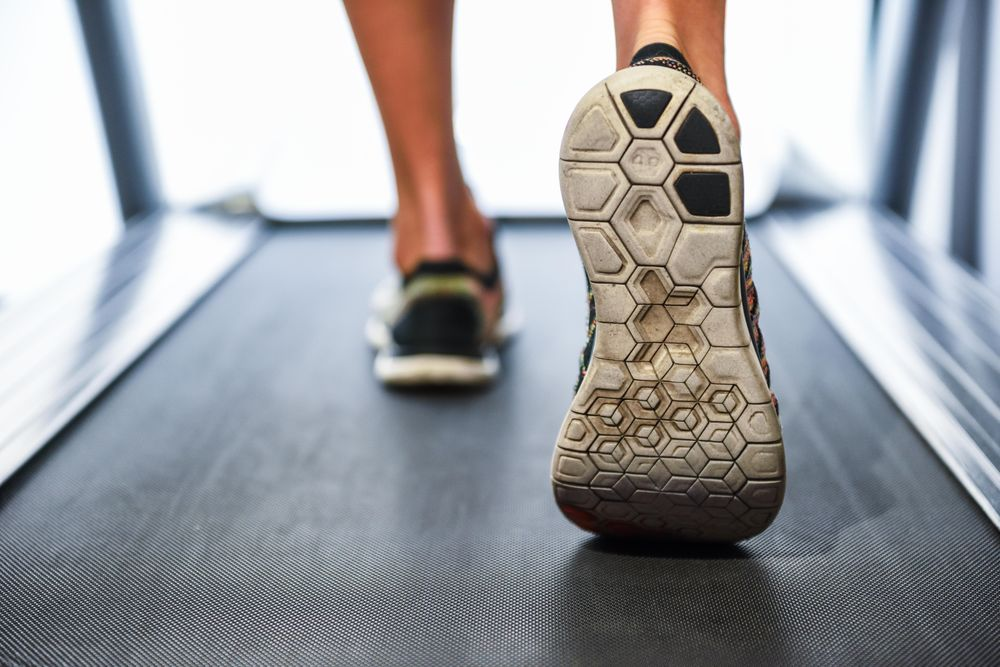

Hi! I'm Chill Koala, and I am a student. This semester, I took a class at Brown called User Interface and User Experience. This is my first experience with coding design, and I learned a lot throughout this course. Here are some assignments that I completed throughout my first semester!
In one of our first studios in this class, I worked with a few other students to create a high-fidelity prototype of our own made-up app, based on the interface of an already existing popular app. When designing an interface, you typically start with a basic sketch, with where you want buttons to go, and what kind of layout you want. This is the low-fidelity prototype. From there, you build on that sketch by creating a high-fidelity prototype. This is where you start adding font styles, colors, and pictures. The final hi-fi prototype should look the same as what you envision for your final design.
Highlights
Interesting Findings
My group decided to make a prototype for AstroPass, a Snackpass for astronauts. We looked at the Snackpass app to model a lot of our colors and font styles, as well as the layout. Then we added some of our own illustrations and example restaurants to make our own variation. Here is what we came up with for our final hi-fi prototype!
In my first project, we used a simple interface to practice thinking about design in a new way. I wanted to look at the treadmill, because it has pretty simple controls, and it's something that is commonly used but people don't really think about the interface. I started by observing and interviewing runners and walkers using treadmills at the gym. Then, I created personas for the people I observed. Creating a persona is kind of like writing a character for a movie. You write out their personality and character, but you also include their motivations, because you want to be able to envision how they would react and respond in different scenarios, not just how they would respond to using a treadmill.
Highlights
Interesting Findings
I first started by observing users of the treadmill, and interviewing them by asking them a few questions about their treadmill experience. Then, I created two personas based on two main ideas that I gathered from these steps. Below are the empathy maps (description of what they would say, think, feel, or do) for two personas: Walking Walter and Running Riley.
Running Riley runs 4 times a week after work.
Walking Walter multitasks on the treadmill.
In one of our last assignments in this class, we learned how to use Flutter. According to its homepage, Flutter is " an open source framework by Google for building beautiful, natively compiled, multi-platform applications from a single codebase." A lot of our previous work in this course had been based in HTML and CSS, so this was a more traditional coding experience to learn. I designed a simple app to practice using the features that are built into Flutter.
Highlights
Interesting Findings
My finished product was an app that generates a new doggo whenever you press the button.
In one of our group assignments in this class, we designed an interface for a startup, through an iterative process where we solicited feedback from our classmates after a preliminary design. After incorporating their feedback into our design, we then created a final design, which we got more feedback from through user testing.
Highlights
Interesting Findings
After the design team iterated over the mockup internally, the hi-fi prototypes were presented in front of other stakeholders to receive feedback. Koko’s initial mockup was praised for simplistic and interactive elements (the sushi and the cat, however, users were concerned with the design’s navigation and color scheme. Below we annotated the comments received from our stakeholders and our actions to incorporate that in our design.